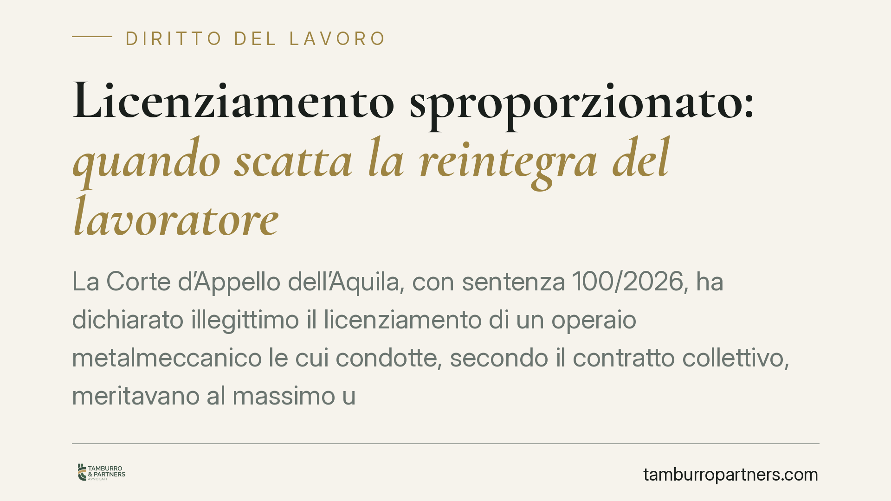

Licenziamento sproporzionato: quando scatta la reintegra del lavoratore
La Corte d'Appello dell'Aquila, con sentenza 100/2026, ha dichiarato illegittimo il licenziamento di un operaio metalmeccanico le cui condotte, secondo il contratto collettivo, meritavano al massimo una sanzione conservativa. Riconosciuti reintegra e risarcimento entro dodici mensilità. Una pronuncia che ribadisce il principio di proporzionalità tra fatto contestato e provvedimento espulsivo.

Il caso
Un carrellista viene licenziato dal datore di lavoro per alcune condotte sul luogo di lavoro. Il lavoratore impugna il recesso sostenendo che quei comportamenti, secondo il contratto collettivo applicabile (CCNL metalmeccanici), non giustificano il licenziamento ma al più una sanzione disciplinare più lieve.
La Corte d'Appello dell'Aquila accoglie la tesi. Le condotte contestate rientrano tra quelle che il contratto collettivo punisce con sanzioni conservative — cioè sanzioni che non interrompono il rapporto di lavoro, come il richiamo o la sospensione. Il licenziamento, in questo quadro, risulta sproporzionato e quindi illegittimo.
Inquadramento normativo
Il cuore della decisione è l'art. 18, comma 4, della L. 300/1970 (Statuto dei lavoratori). La norma prevede che, quando il giudice accerta l'insussistenza del fatto contestato oppure che il fatto rientra tra le condotte punibili con una sanzione conservativa in base al contratto collettivo, il datore di lavoro deve reintegrare il lavoratore nel posto di lavoro.
Alla reintegra si affianca un risarcimento del danno, commisurato alla retribuzione maturata dal licenziamento alla reintegra, nel limite massimo di dodici mensilità. Dalla somma si detrae quanto il lavoratore abbia percepito nel frattempo svolgendo altra attività (il cosiddetto *aliunde perceptum*).
Il passaggio decisivo riguarda il rinvio al contratto collettivo. Quando il CCNL tipizza determinate condotte e le abbina a sanzioni conservative, quella classificazione vincola il datore di lavoro. Non è possibile reagire a un comportamento con il licenziamento se le parti sociali hanno già stabilito che per quel comportamento basta una sanzione minore. Il giudice verifica proprio questa corrispondenza.
Perché la pronuncia conta
La sentenza conferma un orientamento consolidato: il principio di proporzionalità tra infrazione e sanzione non è una formula astratta, ma un criterio operativo che passa anche dalla lettura del contratto collettivo.
Per il datore di lavoro il messaggio è netto. Prima di procedere con un licenziamento disciplinare occorre verificare se la condotta contestata è già "codificata" nel CCNL e con quale sanzione. Se il contratto la punisce con una misura conservativa, il licenziamento è esposto a un rischio concreto di annullamento con reintegra.
Per il lavoratore, la decisione ricorda che l'impugnazione può portare non solo a un indennizzo economico, ma al ritorno effettivo in azienda — tutela più forte rispetto alla sola tutela indennitaria prevista in altre ipotesi.
Implicazioni pratiche
La differenza tra reintegra e indennizzo non è di dettaglio. La reintegra ricostituisce il rapporto; l'indennizzo lo chiude monetizzandolo. Finire nell'una o nell'altra tutela dipende, molto spesso, dalla qualificazione del fatto e dal suo inquadramento nel contratto collettivo.
Per questo la fase istruttoria del procedimento disciplinare è centrale. La contestazione deve essere specifica, tempestiva e circostanziata. Una contestazione generica rende difficile, in giudizio, dimostrare la gravità della condotta e sostenere la proporzionalità del licenziamento.
Sul versante del lavoratore, la tempistica è stringente: il licenziamento va impugnato entro sessanta giorni dalla ricezione, con atto scritto, e il deposito del ricorso giudiziale deve seguire entro i termini di legge, pena l'inefficacia dell'impugnazione.
Cosa fare in concreto
- Verifica il CCNL applicabile. Prima di avviare o contestare un licenziamento, controlla come il contratto collettivo classifica la condotta e quale sanzione prevede.
- Cura la contestazione disciplinare. Redigi (o pretendi) una contestazione specifica, con fatti, date e circostanze precise.
- Rispetta i termini. Se sei il lavoratore, impugna il licenziamento entro sessanta giorni e non far decorrere i termini per il ricorso.
- Documenta l'aliunde perceptum. Conserva prova dei redditi percepiti nel periodo, perché incidono sul calcolo del risarcimento.
- Valuta la tutela applicabile. Accerta se il rapporto ricade nel regime dell'art. 18 St. Lav. o nella disciplina successiva, perché cambiano le conseguenze del licenziamento illegittimo.
La proporzionalità resta la chiave di lettura di ogni provvedimento espulsivo. Una valutazione affrettata del fatto — da entrambe le parti — rischia di spostare l'esito in sede giudiziale.
---
*Contributo informativo a cura di Tamburro & Partners - Avv. Giuseppe Tamburro. Non costituisce parere legale.*
Ogni storia di lavoro ha i suoi tempi.
Se gestisci HR e vuoi un confronto su contenzioso, ispezioni o licenziamenti, scrivi allo studio. Ti rispondiamo entro un giorno lavorativo.